Up to four panes, each with tabs
Copy across with F5, move with F6, drag tabs between panes. Keep layouts you like as workspaces.
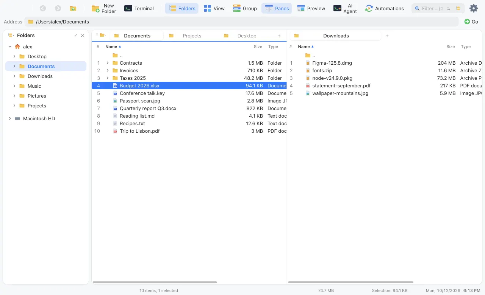
Tabs, split panes, git and Claude Code beside your files. In a modern macOS look or ten others.
Everything you do a hundred times a day is one key or one drag away, on your disk and inside archives.
Copy across with F5, move with F6, drag tabs between panes. Keep layouts you like as workspaces.

Press ⌘K and type. Actions, places, favourites and themes in one fuzzy list.
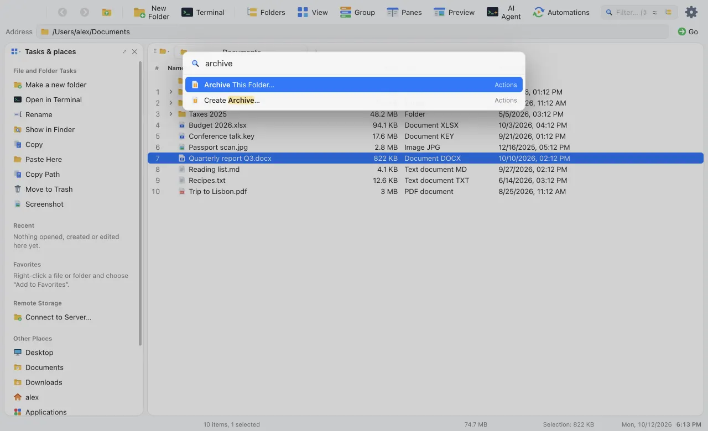
Results stream in while you type, up to 5,000, with a Location column.
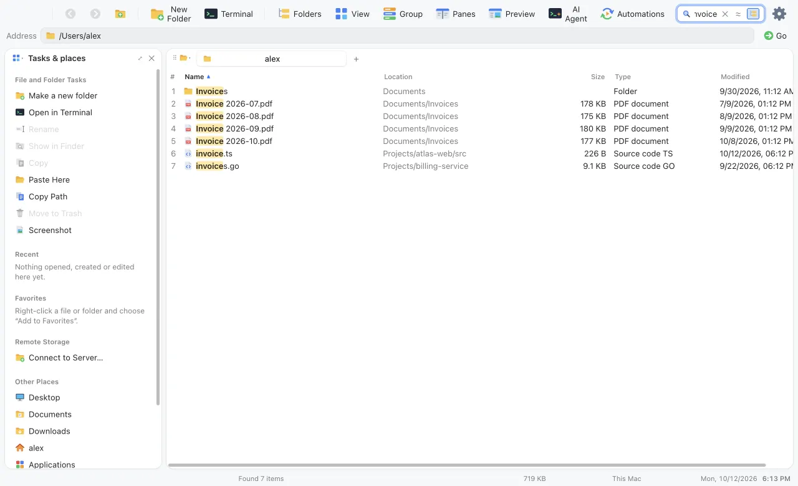
Replace text, regular expressions or numbering, with a live preview that catches collisions first.
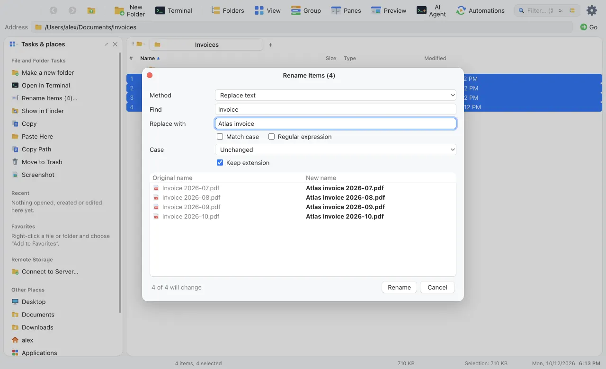
Open .zip and .tar.gz like folders. Pack any selection as ZIP, TAR.GZ or Zstandard.
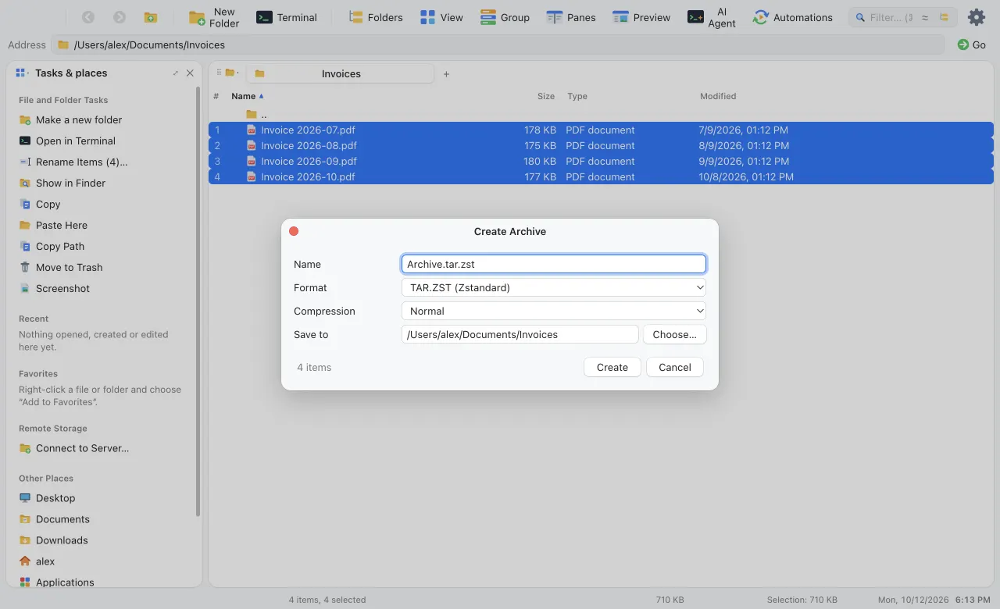
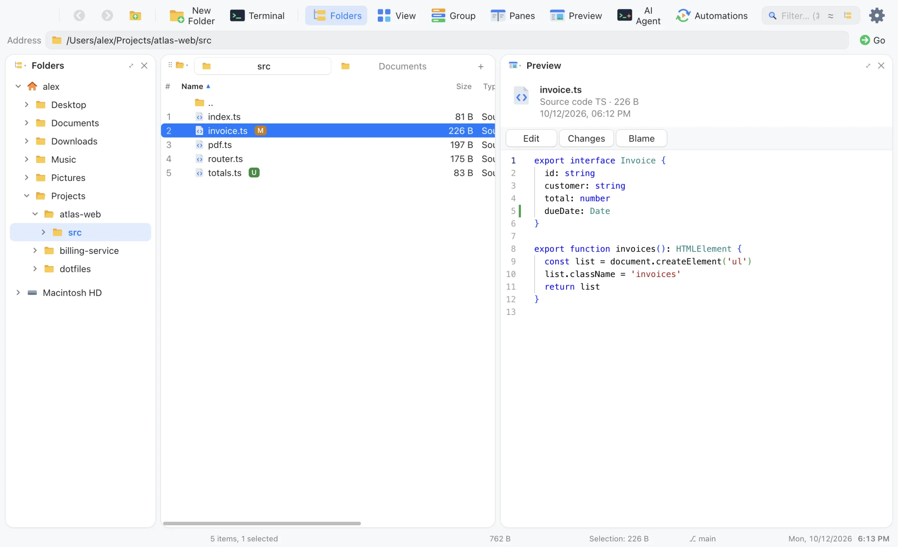
Code and text in Monaco with syntax colours. Edit in place and save with ⌘S.
Change bars against the last commit, a side-by-side diff and blame for the line under the cursor.
Word, Excel, PDF, images, video and audio. Anything else through Quick Look. Press Space for the big view.
Browse, preview, copy, rename and edit on a server the way you do on your disk. Secrets stay in the system keychain.
sftp://deploy@staging.atlas.dev/var/wwws3://atlas-backups/2026/
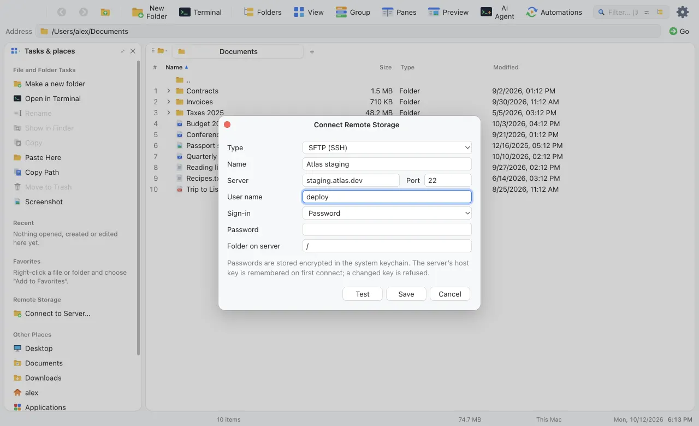
For developers
The staging area is always in view. Commit with ⌘↩, pull, push, rebase and stash without leaving the window.
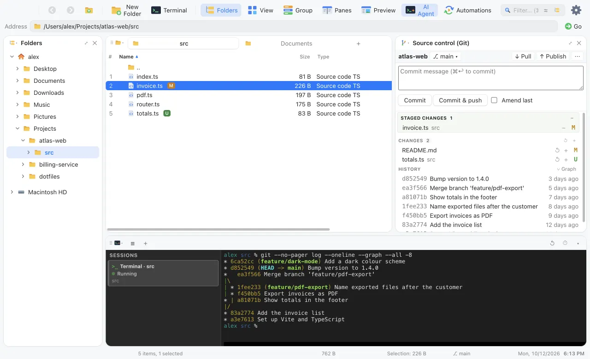
Click a file to compare it side by side in the editor from VS Code. Stage it from the same window.
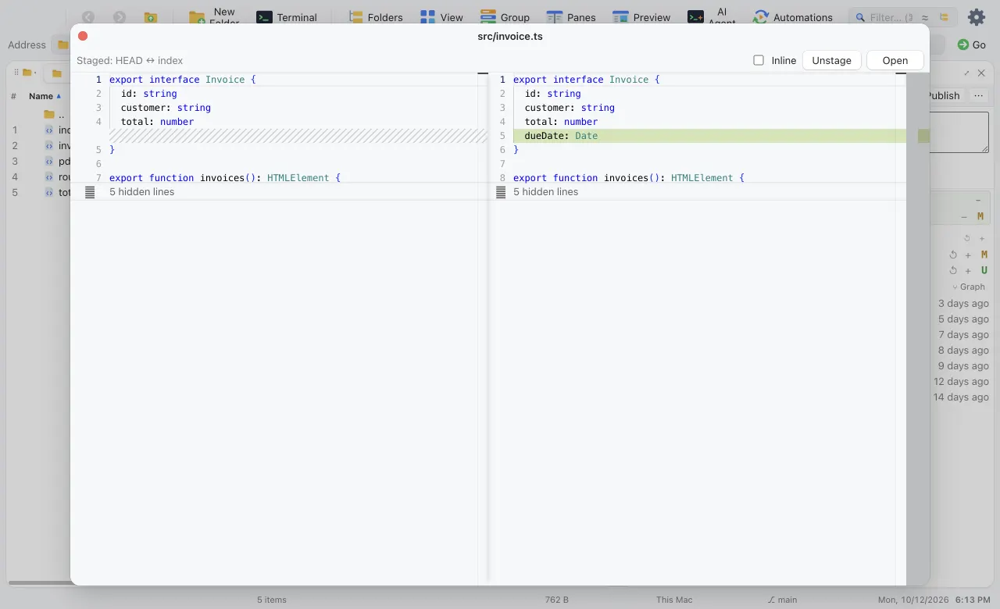
The history graph draws branches and merges. Pick a commit to see its message and changed files.
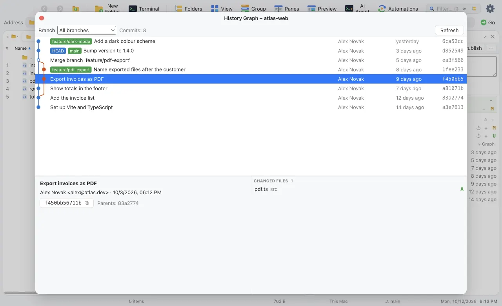
The AI Agent area runs your agents next to the file list. Changes they make show up immediately, and sessions keep running when you hide the area.
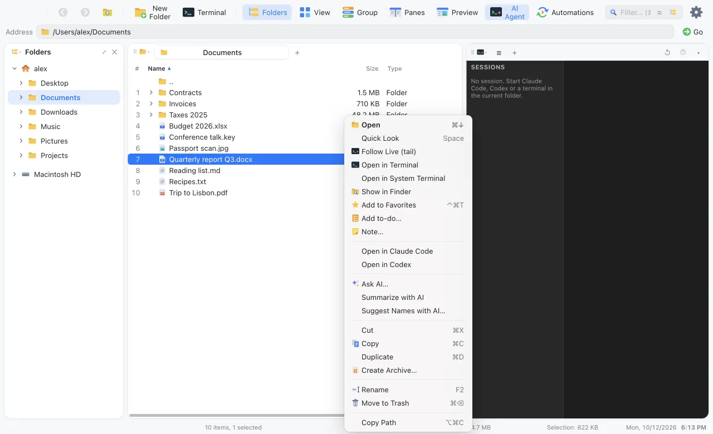
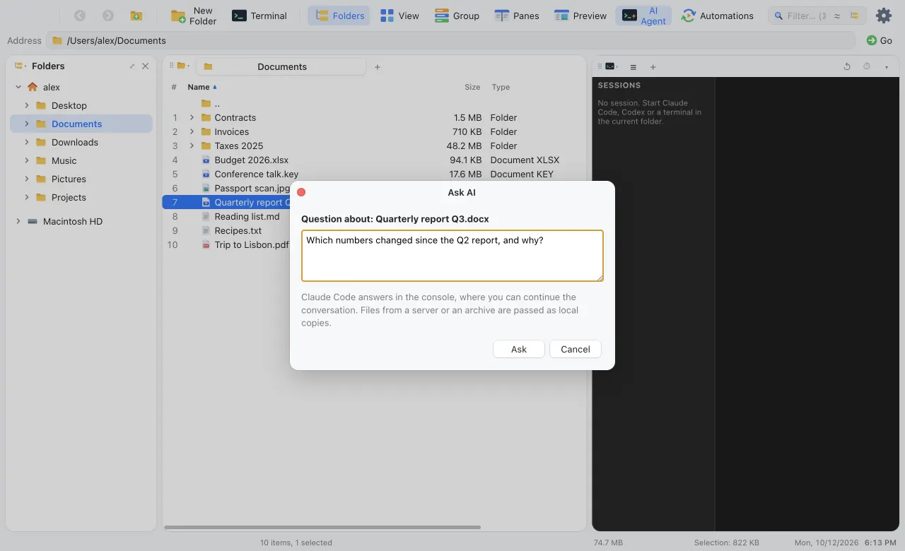
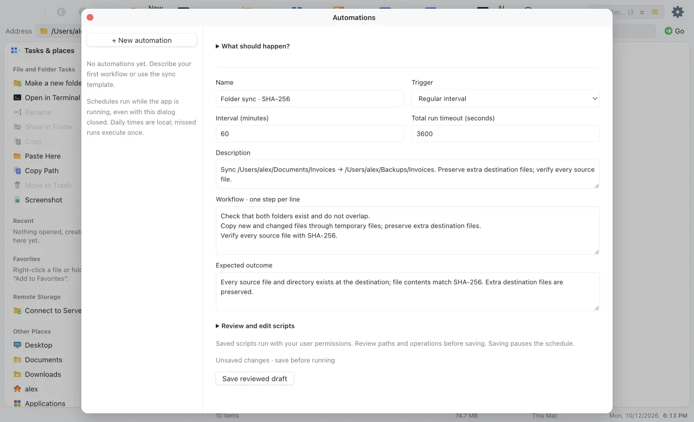
Say what should happen and when. Claude Code drafts a script and a separate check, and asks if something is missing.
Read the plan and both scripts, edit them, save. No AI runs after that.
By hand, every few minutes, daily or at launch. A run only counts once the check passes.
The folder sync template needs no AI at all and verifies every file with SHA-256.
Turn on the built-in MCP server and Claude Code, Codex or Cursor know the folder and files you have selected, and can browse, search and read.
$ claude mcp add --transport http afinder \
http://127.0.0.1:47321/mcp \
--header "Authorization: Bearer <token>"Tools that write, rename, move or trash appear only after you allow changes. The server answers on 127.0.0.1 only and needs the token.
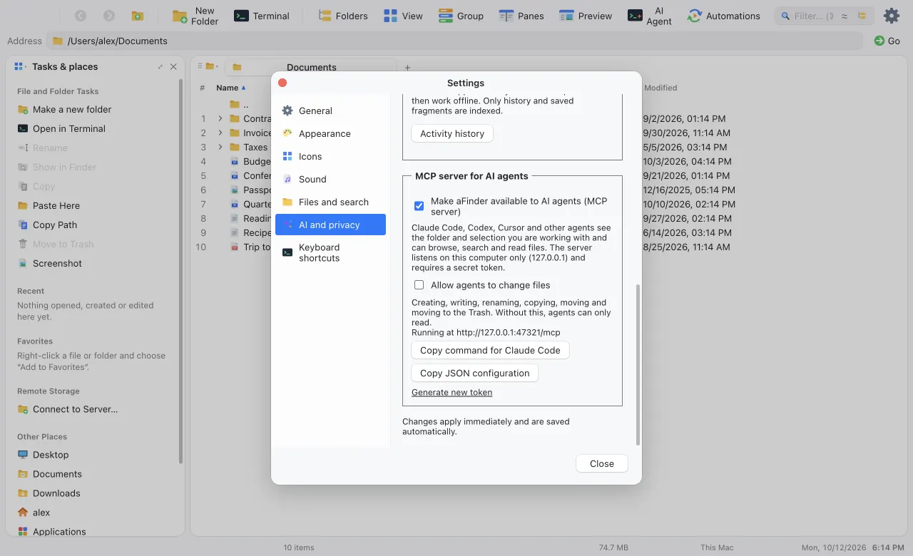
The whole window changes, not just the accent colour. Start with today's Finder or Luna blue, then get carried away.
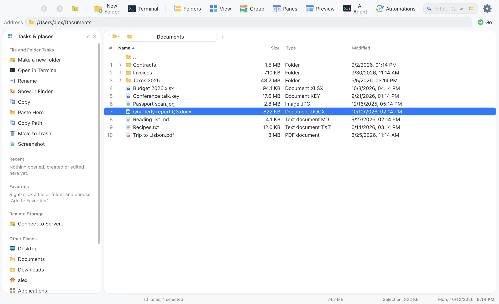
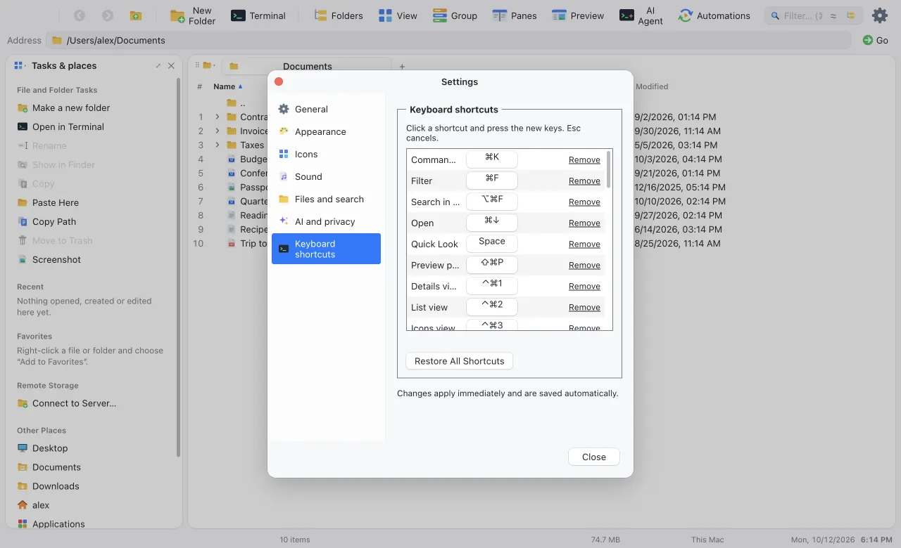
Click a command and press the keys. Up to four bindings each, and one button restores them all.
General, appearance, icon sets, sound, files and search, AI and privacy, and shortcuts. Every open window follows instantly.
Activity history, semantic search, the file assistant and the MCP server wait until you turn them on.
Nothing is fetched until you press the button, and only pinned model versions.
Embeddings and the file assistant run on your machine, in their own worker.
Server passwords, keys and sign-in tokens are stored encrypted by the system.
Finder conventions on the Mac, Explorer conventions on Windows and Linux.
Release notes The app is not notarized yet. On a Mac, open it the first time with right-click, Open.